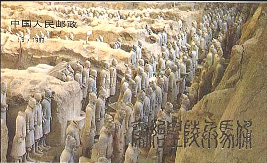
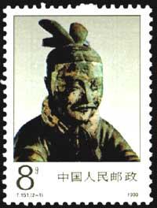
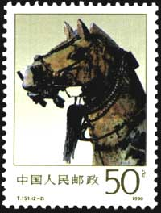
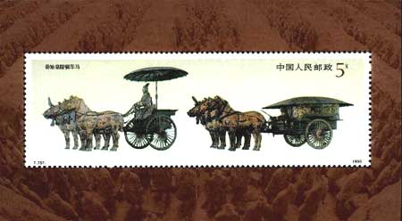
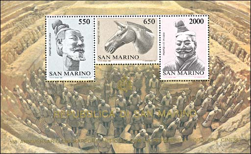
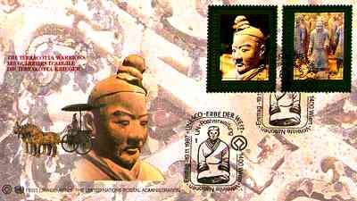
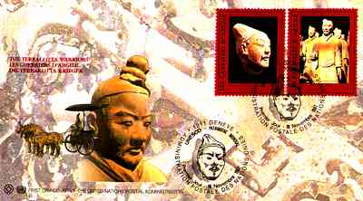
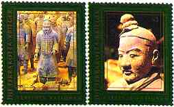
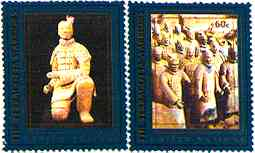
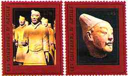

The Terracotta Warriors - China
China, June 30, 1983. Terra Cotta Figures, Qin Dynasty. Sc. 1859-1863. Booklet Image.

China, June 20,1990 Bronze Chariots Unearthed from the Mausoleum of the First Emperor of Qin
About this set of stamps:
China Serial number: T151,
Scott Number: 2276/2277
Designer: Wang Huming, Liu Quanjun
2-1 Head Image of the Cart Driver, 8 fen . Scott 2226
2-2 A Horse Head, 50 fen. Scott 2227.
Miniature Sheet: Bronze Cart and Horse from the Tomb of the First Emperor of Qin,
5 yuan. Scott No. 2228
|
 |
 |
Background:
The First Emperor of Qin Dynasty (221 B.C. - 207 B.C.) was named Ying Zheng
(259BC-210BC). He was the king of the Qin State in the Warring States Period,
founder of the Qin Dynasty. From 230 BC to 221 BC, he wiped out six states and
set up the first centralized unified feudal country. The whole country was
divided into 36 administrative prefectures, each prefecture consisting of
counties. The highest ruler was called Huangdi (Emperor).
The First Emperor's tomb was located in Lintong County of Shaanxi Province,
thirty-five km west of Xi'an. In the early spring of 1974, in the east part of
the tomb was found the Qin terracotta warriors. In December of 1980, in the west
part of the tomb were unearthed two carts with earth horses, which appeared very
lively.

Design:
This sheet shows the image of two unearthed bronze carts. The two carts, when
unearthed, were lined one before the other. The first one was driven by four
bronze horses. After the cart and horses were molded, they were processed
through filing, friction, punching and drilling. Embedded-casting, welding,
riveting, chaining, nailing and other technologies were applied to link parts
together. Its exquisite manufacturing technology reflected the outstanding
creative capability of the Chinese people 2,000 years ago.
Acknowledgments: Many thanks to Sier, China, for the scans of the 1990 issue and
for the text.
The Terracotta Warriors - Monaco
Monaco. July 10, 1986. Terra Cotta Statuary, Tomb of Emperor Qin Shi Huang Dinasty (259-210 BC). Scott 1113. Sheet of three stamps.
550l Bearded Man, 650 l Horse, 2000 l Bearded Man.

The Terracotta Warriors - UN
United Nations. 11/19/1997. The Terracotta Warriors, China, King's Qin Shi Huang Mausoleum. Designer: Blake Tarpley.
|

 |
 |
|
 |
|
|
 |
A nice set with wonderful FDCs and interesting cancels!
|
Created: April 1997. Revised:
12/04/08. . |
Click the banner to visit the site |